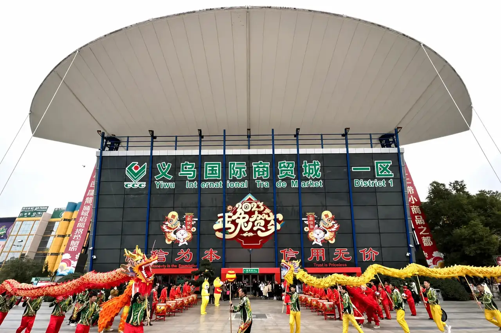

The short answer
In Yiwu International Trade Mart, a floor number only makes sense together with its district or building. District 1 is a starting point for toys, flowers, jewellery and crafts; District 2 covers bags, umbrellas, hardware and electrical categories; District 3 includes stationery, sports and beauty products; District 4 focuses on socks, daily-use goods and apparel accessories; District 5 covers imported products, bedding, textiles and automotive goods. The fifth floor is not a common category floor across all districts—District 2, for example, identifies it as a foreign-trade sourcing and service center.
How to read the Yiwu market floor map
The International Trade Mart is divided into market districts, and each district has its own product mix. That means “go to floor 2” is not a complete direction. A useful buyer note says District 2, floor 2, hardware tools or District 4, floor 1, socks. Category maps are a shortlist—not a guarantee that every supplier, model or booth remains in the same place. Check the official map and confirm supplier details close to your visit.
Floor 1: start with high-rotation and discovery categories
- District 1: artificial flowers, flower accessories and toys.
- District 2: suitcases and bags, umbrellas, rainwear, packing and poly bags.
- District 3: pens, ink and paper products, plus glasses.
- District 4: socks.
- District 5: imported and African products, jewellery, arts and crafts, photo frames, consumer goods and foods.
Buyer use: If you are comparing gifts, travel goods, school basics or a mixed general-merchandise range, pick the district that matches the product brief first. Record exact model, materials, pack size and supplier location while the product is in front of you.
Floor 2: compare accessories, hardware and retail basics
- District 1: hair ornaments and jewellery.
- District 2: locks, electrical products, hardware tools and fittings.
- District 3: office supplies, stationery and sports products.
- District 4: daily necessities, gloves, hats and caps, knitted and cotton goods.
- District 5: bedding.
Buyer use: This level can support very different buying missions. For hardware or electrical items, bring technical requirements such as size, material, voltage or intended application where relevant. For textile or accessory ranges, define material, colour, size run, labels and packaging.
Floor 3: plan for specialist and category-comparison work
- District 1: festival and decorative crafts, ceramic and crystal products, tourism crafts, jewellery accessories and photo frames.
- District 2: hardware and kitchen/sanitary goods, small home appliances, telecommunications and electronic equipment, with clocks and watches among the mapped categories.
- District 3: cosmetics, mirrors and combs, zippers, buttons and apparel accessories.
- District 4: shoes, webbings, lace, towels and related textile goods.
- District 5: towels, knitting materials, fabrics and curtains.
Buyer use: Compare like with like. For example, specify a cosmetic tool’s materials and set contents, a towel’s dimensions and composition, or an electronic item’s operating requirements. Take photos only with permission and label them with the supplier’s market location.
Floor 4: verify the exact hall before you make it a stop
Floor 4 is not one uniform category across Yiwu. The official Yiwugo maps show different uses by district:
- District 1: the market description identifies a manufacturer outlet center on the fourth floor; the main category map emphasizes floors 1–3.
- District 2: manufacturer outlet center and specialized halls.
- District 3: manufacturer outlet center, with listed categories that include cosmetics, stationery and sports, luggage, clocks and apparel accessories.
- District 4: scarves, belts, bras and underwear.
- District 5: automobile and motorcycle accessories.
Ask for the full building, district, floor and booth or supplier name. “Floor 4” on its own is too vague to navigate a sourcing day efficiently.
Floor 5: distinguish service facilities from product halls
The official District 2 guide identifies its fifth floor as a foreign-trade sourcing and service center. It is not simply another product category floor. The public category maps for Districts 1, 3, 4 and 5 list the principal product floors through level 4, so do not assume every district has the same fifth-floor shopping layout. Confirm access, service availability and the specific destination before adding level 5 to your itinerary.
A practical route for international buyers
- Group the request by product family. Put photos, target specifications, expected order quantity, destination market and target retail positioning into one brief.
- Select priority districts before arrival. Choose one or two districts for a focused first visit; a rushed attempt to cover every hall often produces unlabelled samples and incomplete quotes.
- Record a comparable supplier note. Capture the legal or shop name when available, district, building, floor, booth, model, material, MOQ, quote basis, sample terms and packing details.
- Separate discovery from approval. A market display sample or verbal indication is not a final production approval. Confirm the selected version, specifications and order conditions in writing.
- Build in follow-up time. Plan who will request quotations, arrange samples, review quality requirements, receive cartons, consolidate suppliers and prepare export handover.
How ROYAL UNION can support Yiwu purchasing
ROYAL UNION is an independent sourcing and supply-chain partner under MU Group, based in Yiwu. For an agreed B2B project, our team can help with product and supplier research, quotation comparison, sample coordination, order follow-up, quality-check coordination, warehouse receiving, multi-supplier consolidation and export preparation.
We are not an official agent of Yiwugo, 1688, Taobao, Pinduoduo or another marketplace. Supplier availability, pricing, minimums, documents and timing are confirmed project by project. Share a product list before your visit so the team can review the requested categories and confirm what support is practical.
Planning a Yiwu market visit?
Send your product references, expected quantity, destination market and proposed visit dates. We can help turn the category list into a focused discussion about supplier research, samples and order follow-up.
Buyer questions
Are floors 1 to 5 the same across all Yiwu market districts?
No. Product categories are organized by district and building. District 2 lists a fifth-floor foreign-trade sourcing and service center; other districts have different layouts, and their main product maps may stop at level 4.
Which Yiwu market floor should I visit for toys?
District 1, floor 1 is an official starting point for toys. Confirm the supplier's current shop location and specific product before arranging a visit.
Where can I find stationery and beauty categories?
District 3 is a useful starting point: stationery and office goods are listed on floor 2, while cosmetics, mirrors, combs and apparel accessories are listed on floor 3.
Can ROYAL UNION arrange supplier follow-up after a market visit?
For an agreed B2B scope, ROYAL UNION can coordinate supplier comparisons, quotations, samples, order follow-up, quality-check coordination, warehouse receiving and consolidation.
Category references were checked against Yiwugo’s public market guides for District 1, District 2, District 3, District 4 and District 5 on October 22, 2026. The referenced guide identifies District 2’s fifth floor as a foreign-trade sourcing/service center; layouts, access and supplier locations can change. Confirm current details before travel or purchase. This article is an original buyer guide and does not reproduce another company’s page or images.